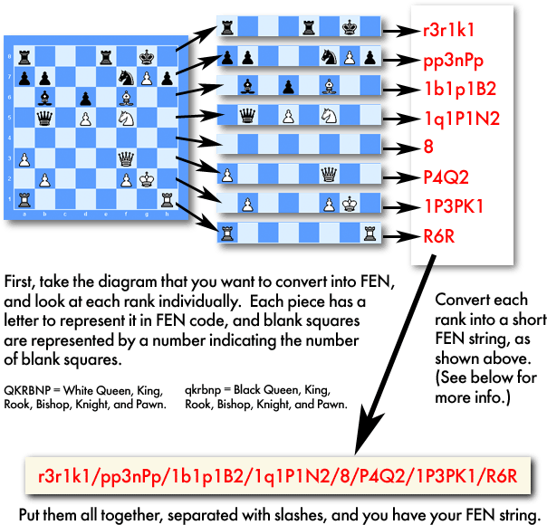

Forsyth–Edwards Notation(FEN)¶
{kind=link}
Forsyth–Edwards Notation (FEN) is a standard notation for describing a particular board position of a chess game. The purpose of FEN is to provide all the necessary information to restart a game from a particular position.
FEN is based on a system developed by Scottish newspaper journalist David Forsyth. Forsyth’s system became popular in the 19th century; Steven J. Edwards extended it to support use by computers. FEN is an integral part of the Portable Game Notation for chess games, since FEN is used to define initial positions other than the standard one. FEN does not provide sufficient information to decide whether a draw by threefold repetition may be legally claimed or a draw offer may be accepted; for that, a different format such as Extended Position Description is needed.
Here is the FEN for the starting position:
rnbqkbnr/pppppppp/8/8/8/8/PPPPPPPP/RNBQKBNR w KQkq - 0 1
Here is the FEN after the move 1. e4:
rnbqkbnr/pppppppp/8/8/4P3/8/PPPP1PPP/RNBQKBNR b KQkq e3 0 1
And then after 1. … c5:
rnbqkbnr/pp1ppppp/8/2p5/4P3/8/PPPP1PPP/RNBQKBNR w KQkq c6 0 2
And then after 2. Nf3:
rnbqkbnr/pp1ppppp/8/2p5/4P3/5N2/PPPP1PPP/RNBQKB1R b KQkq - 1 2